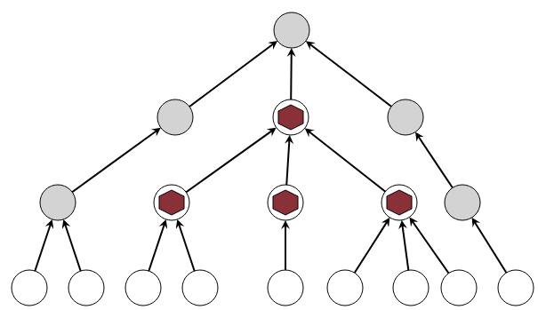
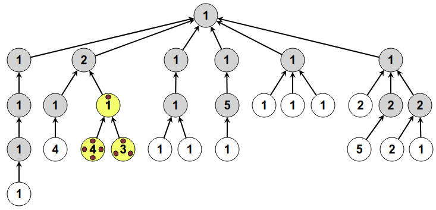
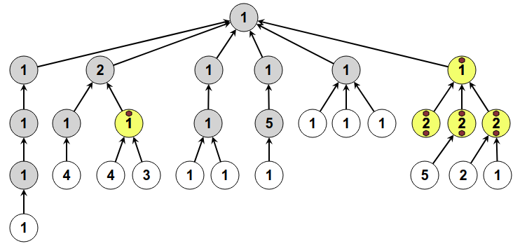
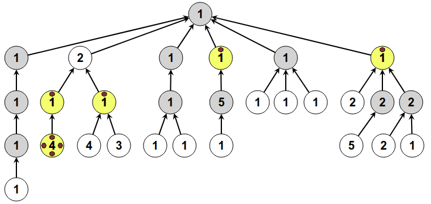

Ratkaisu
Täytetään ensin vasemman puolen kolme ympyrää järjestyksessä alhaalta ylöspäin.

Nyt voimme poistaa kaksi vasemman puolen alinta nappulaa, jonka jälkeen nappuloita on riittävästi oikean puolen kolmen ympyrän täyttämiseen järjestyksessä alhaalta ylöspäin.

Lopuksi voimme poistaa oikean puolen kaksi alinta nappulaa ja sitten asettaa nappulan ylimpään ympyrään. Ratkaisu on valmis!

Meillä on vain 4 nappulaa ja tehtävässä on kaksi sellaista ympyrää, johon osoittaa 3 muuta ympyrää. Tällaisen 4 ympyrän (3 osoittavaa ja 1 osoitettu) asetelman ylimmän ympyrän täyttäminen vaatii kaikki 4 nappulaa. Meidän on pakko aloittaa ratkaisu täyttämällä oikealla alhaalla oleva neljän ympyrän asetelma nappuloilla.

Poistetaan edellä asetetut 3 alinta nappulaa. Seuraavaksi pyrimme täyttämään toisen edellä kuvatunlaisen 4 ympyrän asetelman (joka on keskellä ylhäällä). Tämä vaatii sen alihaarojen täyttämisen. Täytetään seuraavaksi vasemmalla oleva 2 osoittavan ja 1 osoitetyn ympyrän asetelma.

Poistetaan edellä asetetut 2 alinta nappulaa, ja täytetään keskimmäinen yksittäisten osoitusten ketju: ensin nappula keskelle alimpaan ja toiseksi alimpaan ympyrään, sitten alin nappula pois, ja lopuksi nappula 3 ympyrän osoittamaan ylempään ympyrään.

Poistateen 3 alinta nappulaa, ja täytetään niiden avulla suoraviivaisesti ensin vasen ja sitten oikea vielä tyhjä haara alhaalta ylöspäin toiseksi ylimpään tasoon asti (aina poistaen jo tarpeettomat alimmat nappulat): Tämänjälkeen voimme lopuksi asettaa nappulan ylimpään ympyrään. Ratkaisu on valmis!

Meillä on 8 nappulaa. Ohessa keltaisella merkittyjen ympyräiden täyttö vaatii ne kaikki, joten aloitetaan täyttämällä ne. Täytön jälkeen voimme poistaa alimmat 7 nappulaa.

Oikealla olevian kahden keltaisen ympyrän täyttö vaatii kaikki jäljellä olevat 7 nappulaa, joten täytetään ne ja poistetaan sen jälkeen alimmat 5 nappulaa.

Seuraavaksi voimme täyttää 5 nappulalla edellä täytetyn 2 nappulan ympyrän viereiset 2 nappulan ympyrät sekä niiden yläpuolisen ympyrän. Tämän jälkeen voimme poistaa nappulat kolmesta alemmasta 2 nappulan ympyrästä.

Keskellä olevat kaksi keltaista ympyrää vaativat 6 nappulaa, joten täytetään ne, poistetaan alin 1 nappula ja asetetaan se 5 nappulan ympyrän yläpuolelle. Lopukso voimme poistaa kyseisen 5 nappulan ympyrän nappulat.

Vasemmalla olevat kaksi keltaista ympyrää vaativat 5 nappulaa. Täytetään ne, poistetaan alimmat 4 nappulaa, lisätään 2 nappulaa niiden yläpuolella olevaan 2 nappulan ympyrään, ja poistetaan nappulat kyseisen ympyrän alapuolisista 1 nappulan ympyröistä.

Käytetään nyt meillä olevat 4 nappulaa oikealla olevan 3 osoittavan ja 1 osoitetun keltaisen ympyrän asetelman täyttämiseen, ja poistetaan alemmat 3 nappulaa.

Nyt olevilla 3 nappulalla voidaan ensin täyttää keskellä vasemmalla oleva haara toiseksi ylimpään tasoon asti. Tarpeettomien nappuloiden poiston jälkeen on 2 nappulaa, joilla vasemmanpuoleisin haara voidaan täyttää toiseksi ylimpään tasoon asti. Lopuksi voimme poistaa vasemmanpuoleisimman haaran tarpeettomaksi jääneen nappulan ja asettaa sen ylimpään ympyrään. Ratkaisu on valmis!

Tämä on tietojenkäsittelyä!
Tehtävässä käsitelty ympyröistä ja nuolista koostuva rakenne vastaa tietojenkäsittelyssä erittäin laajasti käytettyä puu-tietorakennetta. Nimitys tulee siitä, kuinka rakenteen haarautuminen muistuttaa puun oksien haarautumista. Tehtävän puut oli esitetty tässä mielessä "ylösalaisin", koska haarautuminen eteni ylhäältä alaspäin eikä alhaalta ylöspäin, niinkuin oikeissa puissa. Tietojenkäsittelyssä kutakin puun alkiota (tehtävässä ympyrää) nimitetään solmuksi, ja solmujen välisiä yhteyksiä (tehtävässä nuolia) kaariksi. Tehtävän esitystavan mukaisissa puu-tietorakenteissa ylintä solmua kutsutaan juureksi tai juurisolmuksi ja alimpia solmuja (joihin mikään muu solmu ei osoita) lehdiksi tai lehtisolmuiksi. Tämäkin terminologia viittaa rakenteelliseen vastaavuuteen luonnossa elävien puiden kanssa.
Puu on erikoistapaus graafista, joka on myös erittäin yleisesti tietojenkäsittelyssä käytetty tietorakenne.
Tehtävän ongelmanasettelu ja ratkaisuperiaate vastaa oikeaa tietojenkäsittelyn ongelmaa: tietokoneen suorittimen (prosessori, CPU) rekisterien mahdollisimman tehokasta käyttöä. Rekisterit ovat suorittimen muistipaikkoja, johon se tallettaa laskutoimituksissa käytetyt arvot sekä laskutoimituksen tuloksen. Jotta suoritin voisi suorittaa jonkin laskutoimituksen, täytyy laskutoimituksen osat ensin lukea suorittimen rekistereihin. Koska suorittimissa on vain rajallinen määrä rekistereitä (32 rekisteriä on yleinen määrä moderneissa suorittimissa), on rekistereiden huolellinen käyttö tärkeää. Laskutoimituksen osien esittäminen sopivassa puumuodossa auttaa päättelemään, mitä ja milloin lukea suorittimen rekistereihin, ja milloin rekisterin arvoa ei enää tarvita ja rekisteri voidaan vapauttaa toisen laskutoimituksen käyttöön. Esimerkiksi laskutoimitus (3 - 4) × (1 + 2) voidaan esittää seuraavanlaisena puuna:

Tätä hyödyntäen voidaan päätellä, että suorittimen tulisi ensin lukea (esimerkiksi) arvot 3 ja 4 kahteen rekisteriin, asettaa laskutoimituksen 3-4 tulos -1 yhteen rekisteriin, ja sen jälkeen arvoja 3 ja 4 ei enää tarvita rekistereissä. Seuraavaksi voisi lukea arvot 1 ja 2 kahteen rekisteriin ja asettaa laskutoimituksen 1+2 tuloksen 3 yhteen rekisteriin. Jälleen arvoja 1 ja 2 ei enää tarvita rekistereissä. Lopuksi suoritin voisi asettaa rekistereissä yhä olevien välitulosten -1 ja 3 välisen laskutoimituksen -1×3 tuloksen -3 rekisteriin, jonka jälkeen laskutoimituksen lopullinen tulos on saatu laskettua eikä väliarvoja -1 ja 3 enää tarvita rekistereissä. Tämän menettelyn analogia tehtävän ympyröitä ja nappuloita koskevien sääntöjen kanssa lienee ilmeinen.
Katso lisää esim. https://fi.wikipedia.org/wiki/Puu_(graafiteoria), https://fi.wikipedia.org/wiki/Graafi ja https://fi.wikipedia.org/wiki/Rekisteri_(tietokonetekniikka).